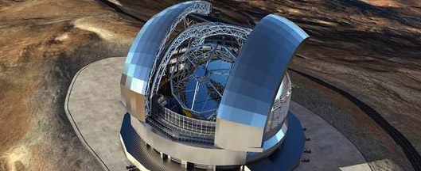

“十三五”期间中国或建世界最大口径的光学红外望远镜
2016年05月26日 记者 钟升24日至25日，来自中国科学院国家天文台、紫金山天文台等单位的60余名天文学专家汇聚南京，共同商议中国地基大口径光学红外望远镜的科学与技术发展战略。
中新网南京5月26日电 (记者钟升)24日至25日，来自中国科学院国家天文台、紫金山天文台等单位的60余名天文学专家汇聚南京，共同商议中国地基大口径光学红外望远镜的科学与技术发展战略。会上，专家们一致倡议在“十三五”期间立项建设中国12米光学红外望远镜，弥补中国在大口径光学红外天文观测设备上的不足。当前，中国光学望远镜集光面积仅占全世界2%，与发达国家相比差距巨大。全世界14架8—10米口径的光学红外望远镜，没有一架在中国。现有光学红外望远镜“在对天体进行高分辨精细观测上远不能满足我国天文学家的要求”。“现在我们要做精细观测都得申请使用国外的望远镜，一晚上至少要花费几万美元，还有可能买不到。国内很多研究只能等国外公布数据后进行二次挖掘。”会议上，专家们深感中国自主拥有的大口径光学红外望远镜的紧缺已对研究造成掣肘。
新一代大口径光学红外望远镜设计总高31米，镜面口径12米。建成后，相当长一段时间将是世界上口径最大的光学望远镜，为中国在暗能量本质、引力波源光学认证和研究、太阳系外类地行星探测等重大前沿领域取得重大突破。据来自南京天文光学技术研究所的专家介绍，自20世纪初，中国的天文学家和天文仪器专家们就已经针对这项计划开始提出了呼吁。大口径望远镜的关键技术已经预研了很多年，已具备了大口径光学红外望远镜建设的能力和条件。目前，正在贵州平塘建设的世界最大单口径射电望远镜已进入收尾阶段，如光学红外天文望远镜建设项目获批，中国在未来将拥有两台世界最大的天文望远镜。但对天文学界来说，两个世界第一依旧难以弥补中国在天文观测设备上的不足。“等中国12米口径光学红外望远镜建成后，我们下一步也许会迈的更大，建40米或50米口径级的超大型光学望远镜”，与会专家透露道。“天文学的追求是永无止境的”。
据国外媒体报道，二十多名工程师与技师以手术般的精准度成功将詹姆斯-韦伯太空望远镜的科学器件安装进望远镜结构。这些科学器件包括摄像机及光谱仪，它们能记录由韦伯望远镜巨大的黄金镜片收集的光线数据。位于美国宇航局戈达德太空飞行中心全球最大的净室内，安装团队用起重机吊起沉重的科学器件封装，将它放入望远镜背部的密闭罩内，固定于望远镜上。
如今，科学器件、镜片及望远镜结构都已组装完毕，这些组合器件将要经过一系列振动及声学测试，以确保所有的科学负载都能顺利通过发射。“设计并建造如此大、如此复杂，利用如此多新技术的设备，很多东西早已超出了计划。”Dunn说，“任何事物总有起起伏伏，詹姆斯-韦伯太空望远镜团队难人功。”
- 